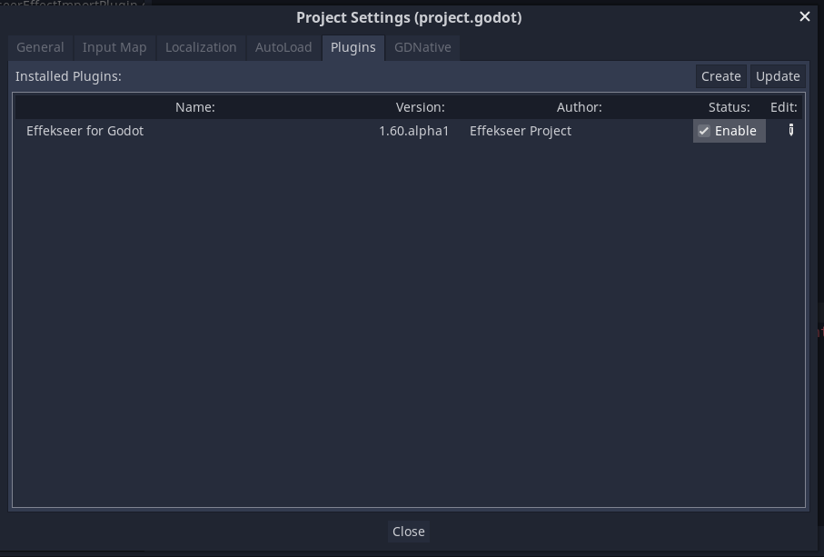
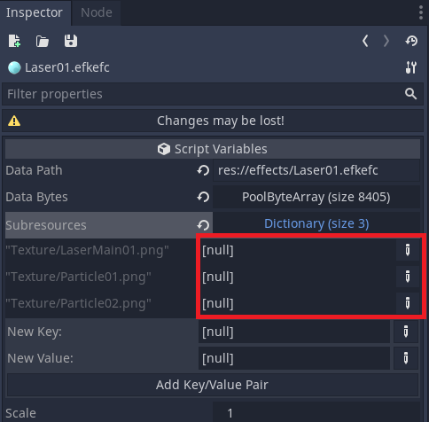
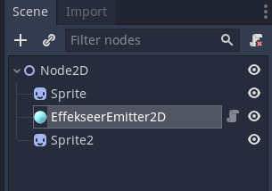
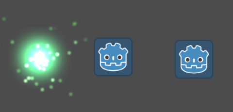
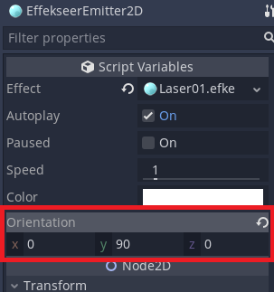
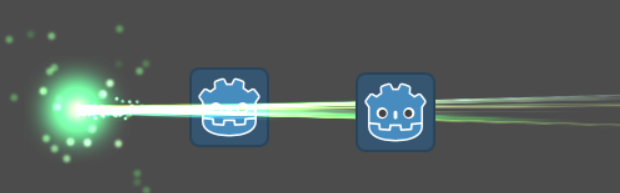
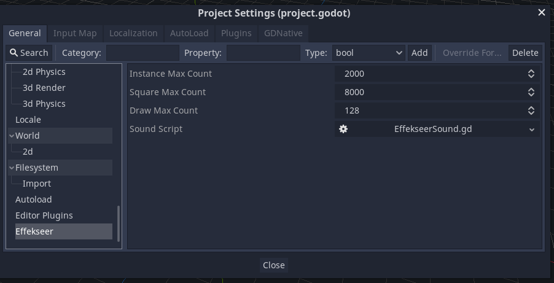

プラグインの使い方¶
Effekseerプラグインの導入¶
こちらから最新のビルド済みプラグインをダウンロードします。
ダウンロードしたzip内のaddonsディレクトリをGodotプロジェクト直下にコピーします。

プロジェクト設定のプラグインタブからEffekseer for GodotのStatusを有効にします。

以上でプラグインの導入は完了です。
リソースファイル¶
Godotのプロジェクトのres://の中にエフェクトファイル(*.efkefc)やテクスチャ、サウンド、マテリアル等を配置します。

エフェクトのインポート¶
efkefcファイルはGodotのリソースとしてインポートされます。

成功すると上図のようにテクスチャ、モデル、マテリアル等のサブリソースがリンクされます。

サブリソースがリンク出来ていない場合は、再インポートを試してください。

scale設定¶
読み込んだエフェクトの大きさが小さく、サイズを調整したい時があります。その場合はefkefcファイルを選択し、インポートタブのscale のパラメーターを変更して再インポートボタンを押します。
EffekseerEmitterのScaleを変更することでエフェクトの大きさを変更することもできますが、この方法だとエフェクトの設定によっては拡大されないことがあります。
3Dシーンでの使用方法¶
3Dシーン中でインポートしたエフェクトを発生させるには、エミッタ(EffekseerEmitter)を使用します。エミッタはエフェクトの発生源で、3Dシーン中に配置して使用します。
まず、ノードツリーにEffekseerEmitterがアタッチされたNodeを追加します。(3DなのでSpatialの下のEffekseerEmitterです)

EffekseerEmitterが追加されました。

次にEffekseerEmitterを選択し、インスペクタのEffectプロパティにインポートしたエフェクトをドラッグ&ドロップして指定します。

Autoplayがチェックされているので、シーンを実行するとエフェクトが表示されます。

エミッタのインスペクタ¶

| 項目 | 説明 |
|---|---|
| Effect | エミッタで再生するエフェクトリソースを設定します |
| Autoplay | チェックを入れると、シーン開始時(_ready()のタイミング)に自動的にエフェクトを再生します |
| Paused | 再生中のポーズ状態を設定します |
| Speed | エフェクトの再生速度を設定します |
| Color | エフェクトの色を設定します |
2Dシーンでの使用方法¶
2Dシーン中でインポートしたエフェクトを発生させるには、エミッタ2D(EffekseerEmitter2D)を使用します。エミッタ2Dはエフェクトの発生源で、2Dシーン中に配置して使用します。
まず、ノードツリーにEffekseerEmitter2DがアタッチされたNodeを追加します。(2DなのでNode2Dの下のEffekseerEmitter2Dです)

EffekseerEmitter2Dが追加されました。

次にEffekseerEmitter2Dを選択し、インスペクタのEffectプロパティにインポートしたエフェクトをドラッグ&ドロップして指定します。

2Dシーンは座標基準がピクセルのため、Transform2Dのスケールを指定します。

Autoplayがチェックされているので、シーンを実行するとエフェクトが表示されます。

想定していたエフェクトの見た目と違う場合はorientationを調整します。orientationにはXYZ軸ごとに回転角を指定できます。

正しい向きでエフェクトが表示されました。

エミッタ2Dのインスペクタ¶
| 項目 | 説明 |
|---|---|
| Effect | エミッタで再生するエフェクトリソースを設定します |
| Autoplay | チェックを入れると、シーン開始時(_ready()のタイミング)に自動的にエフェクトを再生します |
| Paused | 再生中のポーズ状態を設定します |
| Speed | エフェクトの再生速度を設定します |
| Color | エフェクトの色を設定します |
| Orientation | エフェクトの向きを設定します |
プロジェクト設定¶
Effekseerの全体的な設定はGodotのプロジェクト設定から行うことができます。

| 項目 | 説明 |
|---|---|
| Instance Max Count | ノードが生成するインスタンスの同時最大数 |
| Square Max Count | 描画に使用する四角形の同時最大数 |
| Draw Max Count | ドローコールの同時最大数 |
| Sound Script | サウンド再生で使われるスクリプト。差し替えが可能 |
プロジェクト設定¶
Effekseerの全体的な設定はGodotのプロジェクト設定から行うことができます。
| 項目 | 説明 |
|---|---|
| Instance Max Count | ノードが生成するインスタンスの同時最大数 |
| Square Max Count | 描画に使用する四角形の同時最大数 |
| Draw Max Count | ドローコールの同時最大数 |
| Sound Script | サウンド再生で使われるスクリプト。差し替えが可能 |
エフェクトのプレビュー¶
Godotにインポートしたefkefcファイルを選択すると、インスペクター上でプレビュー再生を行うことができます。

また、”Open in Effekseer”を押すとEffekseerでefkefcファイルを開きます。
この機能を使用するには、エディタ設定のEffekseerの所でEffekseerツールのパスを設定する必要があります。